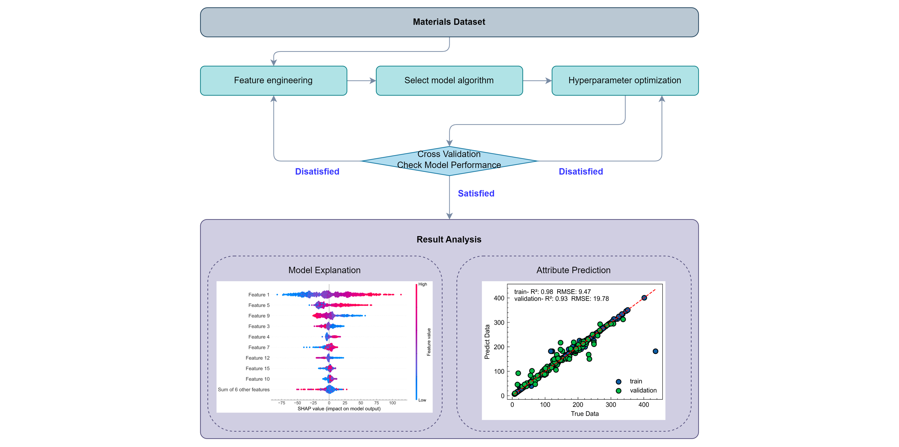

Codes
Our group actively develops and contributes to open-source software. Much of the software we develop is designed to help manage, analyse, and interpret first-principles calculations. Some of the codes we develop and maintain are listed below. More information can be found on our GitHub page.
mlrap

MLRAP (Machine Learning Regression Analysis Package) is designed to support materials scientists in building regression models and uncovering structure-property relationships. This software provides a user-friendly command-line interface, automating the machine learning workflow in Python. It includes modules for data preprocessing, feature engineering, model evaluation, optimization, and interpretation. By streamlining these processes, MLRAP significantly reduces the workload for users and improves the efficiency of materials research and development.
Code | Paper